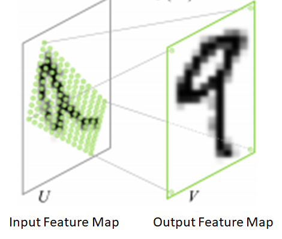

Image Pre-Processing

The mean vector ($3\times 1$, one number corresponding to each color channel) is not the mean of the pixel values in the current image but a configuration value that is identical across all training and test images. The default values for $targetSize$ and $maxSize$ parameters are 600 and 1000 respectively.
Network Organization Overview
A R-CNN uses neural networks to solve two main problems:
- Identify promising regions (Region of Interest – RoI) in an input image that are likely to contain foreground objects
- Compute the object class probability distribution of each RoI – i.e., compute the probability that the RoI contains an object of a certain class.
As shown below, R-CNNs consist of three main types of networks:
- Head
- Region Proposal Network (RPN)
- Classification Network
R-CNNs use the first few layers of a pre-trained network such as ResNet 50 as head network to identify promising features from an input image. Using a network trained on one dataset on a different problem is possible because neural networks exhibit “transfer learning” .
The convolutional feature maps produced by the head network are then passed through the Region Proposal Network (RPN) which uses a series of convolutional and fully connected layers to produce promising RoIs that are likely to contain a foreground object.
These promising RoIs are then used to crop out corresponding regions from the feature maps produced by the head network. This is called “Crop Pooling”. The regions produced by crop pooling are then passed through a classification network which learns to classify the object contained in each RoI.
The diagram below shows the individual components of the three network types described above. $w$ and $h$ represent the width and height of the input image (after pre-processing).

Implementation Details: Training
The goal of training is to adjust the weights in the RPN and Classification network and fine-tune the weights of the head network (these weights are initialized from a pre-trained network such as ResNet). To train these networks, we need the corresponding ground truth i.e., the coordinates of the bounding boxes around the objects present in an image and the class of those objects.
Let’s take a moment to go over the concepts of “bounding box regression coefficients” and “bounding box overlap” that are used extensively in R-CNNs.
- Bounding Box Regression Coefficients
One of the goals of R-CNN is to produce good bounding boxes that closely fit object boundaries. R-CNN produces these bounding boxes by taking a given bounding box and tweaking it by applying a set of “regression coefficients”.

The regression coefficients are given as:
$$ t_x = \frac{T_x - O_x}{O_w}, \quad t_w = \log \frac{T_w}{O_w} \\ t_y = \frac{T_y - O_y}{O_h}, \quad t_h = \log \frac{T_h}{O_h} \\ $$
- Intersection over Union (IoU) Overlap

With these preliminaries out of the way, lets now dive into the implementation details for a R-CNN. In the software implementation, R-CNN execution is broken down into several layers, as shown below. A layer encapsulates a sequence of logical steps that can involve running data through one of the neural networks and other steps such as comparing overlap between bounding boxes, performing non-maxima suppression etc.

Anchor Generation Layer
This layer generates a fixed number of “anchors” (bounding boxes) by first generating 9 anchors of different scales and aspect ratios and then replicating these anchors by translating them across uniformly spaced grid points spanning the input image. These bounding boxes are the same for all images i.e., they are agnostic of the content of an image. Some of these bounding boxes will enclose foreground objects while most won’t.
The diagram below demonstrates how these anchor boxes are generated.

Note that the stride 16 is equal to the down sample factor of Head Network.
Region Proposal Network

Proposal Layer
The proposal layer takes the anchor boxes produced by the anchor generation layer and prunes the number of boxes by applying non-maximum suppression based on the foreground scores. It also generates transformed bounding boxes by applying the regression coefficients generated by the RPN to the corresponding anchor boxes.

Non-maximum Suppression
Non-maximum suppression is a technique used to reduce the number of candidate boxes by eliminating boxes that overlap by an amount larger than a threshold. The boxes are first sorted by some criteria (in this case, the foreground score). We then go through the list of boxes and suppress those boxes whose IoU overlap with the box under consideration exceeds a threshold. This results in the box with the highest score among a set of overlapping boxes being retained.
Crop Pooling
Proposal target layer produces promising RoIs for us to classify along with the associated class labels and regression coefficients that are used during training. The next step is to extract the regions corresponding to these RoIs from the convolutional feature maps produced by the head network. The extracted feature maps are then run through the rest of the network (“tail” in the network diagram shown above) to produce object class probability distribution and regression coefficients for each RoI. The job of the Crop Pooling layer is to perform region extraction from the convolutional feature maps.
The key ideas behind crop pooling are described in the paper Spatial Transformer Networks. The goal is to apply a warping function (described by a $2\times 3$ affine transformation matrix) to an input feature map to output a warped feature map. This is shown in the figure below.
There are two steps involved in crop pooling:
- For a set of target coordinates, apply the given affine transformation to produce a grid of source coordinates.
$$ \left[ \begin{matrix} x_i^s \\ y_i^s \end{matrix} \right] = \left[ \begin{matrix} \theta_{11} & \theta_{12} & \theta_{13} \\ \theta_{21} & \theta_{22} & \theta_{23} \end{matrix} \right] \left[ \begin{matrix} x_i^t \\ y_i^t \\ 1 \end{matrix} \right] $$
Here $x_i^s,y_i^s,x_i^t,y_i^t$ are height/width normalized coordinates, so $-1\leq x_i^s,y_i^s,x_i^t,y_i^t \leq 1$.
- The input (source) map is sampled at the source coordinates to produce the output (destination) map. In this step, each $(x_i^s, y_i^s)$ coordinate defines the spatial location in the input where a sampling kernel (for example bi-linear sampling kernel) is applied to get the value at a particular pixel in the output feature map.
Puzzle: What’s sampling kernel?
The sampling methodology described in the spatial transformation gives a differentiable sampling mechanism allowing for loss gradients to flow back to the input feature map and the sampling grid coordinates. Fortunately, crop pooling is implemented in PyTorch and the API consists of two functions that mirror these two steps. torch.nn.functional.affine_grid takes an affine transformation matrix and produces a set of sampling coordinates and torch.nn.functional.grid_sample samples the grid at those coordinates. Back-propagating gradients during the backward step is handled automatically by PyTorch.
To use crop pooling, we need to do the following:
- Divide the RoI coordinates by the stride length of the “head” network. The coordinates of the RoIs produced by the proposal target layer are in the original image space (! 800 $\times$ 600). To bring these coordinates into the space of the output feature maps produced by “head”, we must divide them by the stride length (16 in the current implementation).
- To use the API shown above, we need the affine transformation matrix. This affine transformation matrix is computed as shown below

- We also need the number of points in the $x$ and $y $ dimensions on the target feature map. This is provided by the configuration parameter
cfg.POOLING_SIZE(default 7). Thus, during crop pooling, non-square RoIs are used to crop out regions from the convolution feature map which are warped to square windows of constant size. This warping must be done as the output of crop pooling is passed to further convolutional and fully connected layers which need input of a fixed dimension.
To sum up, The crop pooling layer takes the RoI boxes output by the proposal target layer and the convolutional feature maps output by the “head” network and outputs square feature maps.
Classification Layer
The feature maps output by RoI Pooling Layer are then passed through layer 4 of ResNet following by average pooling along the spatial dimensions. The result (called “fc7” in code) is a one-dimensional feature vector for each RoI. This process is shown below.

Note: This figure includes Crop Pooling Layer.
The feature vector is then passed through two fully connected layers – bbox_pred_net and cls_score_net. The cls_score_net layer produces the class scores for each bounding box (which can be converted into probabilities by applying softmax). The bbox_pred_net layer produces the class specific bounding box regression coefficients which are combined with the original bounding box coordinates produced by the proposal target layer to produce the final bounding boxes. These steps are shown below.

It’s good to recall the difference between the two sets of bounding box regression coefficients – one set produced by the RPN network and the second set produced by the classification network.
- The first set is used to train the RPN layer to produce good foreground bounding boxes (that fit more tightly around object boundaries). The target regression coefficients needed to align a RoI box with its closest matching ground truth bounding box are generated by the anchor target layer.
- The second set of bounding box coefficients is generated by the classification layer. These coefficients are class specific, i.e., one set of coefficients are generated per object class for each RoI box. The target regression coefficients for these are generated by the proposal target layer. Note that the classification network operates on square feature maps. However since the regression coefficients are invariant to an affine transformation with no shear, the target regression coefficients computed by the proposal target layer can be compared with those produced by the classification network and act as a valid learning signal.
Puzzle: 每个RoI，对每个分类都有一组对应的coefficients? 为什么要这样？为什么不是每个RoI对预测概率最大的分类才有一组coefficient?
It is interesting to note that while training the classification layer, the error gradients propagate to the RPN network as well. This is because the RoI box coordinates used during crop pooling are themselves network outputs as they are a result of applying the regression coefficients generated by the RPN network to the anchor boxes. During back-propagation, the error gradients will propagate back through the crop-pooling layer to the RPN layer. Calculating and applying these gradients would be quite tricky to implement, however thankfully the crop pooling API is provided by PyTorch as a built-in module and the details of calculating and applying the gradients are handled internally. This point is discussed in Section 3.2 (iii) of the Faster RCNN paper
Compute Loss
Compute RPN Loss: Anchor Target Layer
The goal of the anchor target layer is to select promising anchors that can be used to train the RPN network to:
My Comment: Maybe the goal is to select promising anchors to calculate the loss?
- distinguish between foreground and background regions and
- generate good bounding box regression coefficients for the foreground boxes.
It is useful to first look at how the RPN Loss is calculated. This will reveal the information needed to calculate the RPN loss which makes it easy to follow the operation of the Anchor Target Layer.
RPN loss is a sum of the classification loss (foreground v. background) and bounding box regression loss.
$$
{\rm RPN\ Loss} = {\rm Classification \ Loss} + {\rm Bounding \ Box \ Regression \ Loss}
$$
Classification Loss:
$$
{\rm Cross\_Entropy(predicted\_class, actual\_class)}
$$
Bounding Box Regression Loss:
$$
L_{loc} = \sum_{u\in {\rm all\ foreground\ anchors}} l_u
$$
Sum over the regression losses for all foreground anchors. Doing this for background anchors doesn’t make sense as there is no associated ground truth box for a background anchor.
$$
l_u(t^u,v) = \sum_{i\in\{x,y,w,h\}} {\rm smooth}_{L_1}(t_i^u - v_i)
$$
$u$ represents class (in this case, foreground or background). $t^u =(t_x^u,t_y^u,t_w^u,t_h^u)$ is predicted bounding box, $v = (v_x,v_y,v_w,v_h)$ is bounding box regression targets.
$$ {\rm smooth}_{L_1}(x) = \begin{cases} 0.5x^2 & \text{if |x| < 1}\\ |x|-0.5& \text{otherwise} \end{cases} $$
Thus, to calculate the loss we need to calculate the following quantities:
- Class labels (background or foreground) and scores for the anchor boxes
- Target regression coefficients for the foreground anchor boxes
We’ll now follow the implementation of the anchor target layer to see how these quantities are calculated. We first select the anchor boxes that lie within the image extent. Then, good foreground boxes are selected by first computing the IoU (Intersection over Union) overlap of all anchor boxes (within the image) with all ground truth boxes. Using this overlap information, two types of boxes are marked as foreground:
- type A: For each ground truth box, all foreground boxes that have the max IoU overlap with the ground truth box
- type B: Anchor boxes whose maximum overlap with some ground truth box exceeds a threshold
Puzzle: 为什么分type A和type B?

Note that only anchor boxes whose overlap with some ground truth box exceeds a threshold are selected as foreground boxes. Similarly, boxes whose overlap are less than a negative threshold are labeled background boxes. Boxes that are neither foreground or background are labeled “don’t care”. These boxes are not included in the calculation of RPN loss.
There are two additional thresholds related to the total number of background and foreground boxes we want to achieve and the fraction of this number that should be foreground. If the number of foreground boxes that pass the test exceeds the threshold, we randomly mark the excess foreground boxes to “don’t care”. Similar logic is applied to the background boxes.
Next, we compute bounding box regression coefficients between the foreground boxes and the corresponding ground truth box with maximum overlap, i.e. target regression coefficients for the foreground anchor boxes. This is easy and one just needs to follow the formula to calculate the regression coefficients.
This concludes our discussion of the anchor target layer. To recap, let’s list the parameters and input/output for this layer:
Parameters:
TRAIN.RPN_POSITIVE_OVERLAP: Threshold used to select if an anchor box is a good foreground box (Default: 0.7)TRAIN.RPN_NEGATIVE_OVERLAP: If the max overlap of a anchor from a ground truth box is lower than this threshold, it is marked as background. Boxes whose overlap is $>$ thanRPN_NEGATIVE_OVERLAPbut $<$RPN_POSITIVE_OVERLAPare marked “don’t care”.(Default: 0.3)TRAIN.RPN_BATCHSIZE: Total number of background and foreground anchors (default: 256)TRAIN.RPN_FG_FRACTION: fraction of the batch size that is foreground anchors (default: 0.5). If the number of foreground anchors found is larger thanTRAIN.RPN_BATCHSIZE$\times$TRAIN.RPN_FG_FRACTION, the excess (indices are selected randomly) is marked “don’t care”.
Input:
Region Proposal Network Outputs (predicted foreground/background class labels, regression coefficients)
Anchor boxes (generated by the anchor generation layer)
Ground truth boxes
Output
- Good foreground/background boxes and associated class labels
- Target regression coefficients
Compute Classification Layer Loss
Similar to the RPN Loss, classification layer loss has two components – classification loss and bounding box regression loss.
$$
{\rm Classification\ Layer\ Loss} = {\rm Classification \ Loss} + {\rm Bounding \ Box \ Regression \ Loss}
$$
The key difference between the RPN layer and the classification layer is that while the RPN layer dealt with just two classes – foreground and background, the classification layer deals with all the object classes (plus background) that our network is being trained to classify.
The classification loss is the cross entropy loss with the true object class and predicted class score as the parameters. It is calculated as shown below.

$$
{\rm Cross\ entropy\ loss}=\frac{-1}{\rm \#samples}\sum_{i\in{\rm Anchor\ Box\ Samples} } \log \frac{e^{x[i][c_i]} }{\sum_j e^{x[i][j]} }
$$
The bounding box regression loss is also calculated similar to the RPN except now the regression coefficients are class specific. The network calculates regression coefficients for each object class. The target regression coefficients are obviously only available for the correct class which is the object class of the ground truth bounding box that has the maximum overlap with a given anchor box. While calculating the loss, a mask array which marks the correct object class for each anchor box is used. The regression coefficients for the incorrect object classes are ignored.
Thus the following quantities are needed to calculate classification layer loss:
- Predicted class labels and bounding box regression coefficients (these are outputs of the classification network)
- class labels for each anchor box
- Target bounding box regression coefficients
Let’s now look at how these quantities are calculated in the proposal target layer and classification layer.
Proposal Target Layer
The goal of the proposal target layer is to select promising RoIs from the list of RoIs output by the proposal layer. These promising RoIs will be used to perform crop pooling from the feature maps produced by the head layer and passed to the rest of the network that calculates predicted class scores and box regression coefficients.
Similar to the anchor target layer, it is important to select good proposals (those that have significant overlap with ground truth boxes) to pass on to the classification layer.
The proposal target layer starts with the RoIs computed by the proposal layer. Using the max overlap of each RoI with all ground truth boxes, it categorizes the RoIs into background and foreground RoIs. Foreground RoIs are those for which max overlap exceeds a threshold (TRAIN.FG_THRESH, default: 0.5). Background RoIs are those whose max overlap falls between TRAIN.BG_THRESH_LO and TRAIN.BG_THRESH_HI(default 0.1, 0.5 respectively).
Puzzle: 为什么这里的Background的IoU是在两个值之间，而不是像Anchor Target Layner那样低于某个阈值？
There is some additional logic that tries to make sure that the total number of foreground and background region is constant. In case too few background regions are found, it tries to fill in the batch by randomly repeating some background indices to make up for the shortfall.
Next, bounding box target regression targets are computed between each RoI and the closest matching ground truth box (this includes the background RoIs). These regression targets are expanded for all classes as shown in the figure below.

the bbox_inside_weights array acts as a mask. It is 1 only for the correct class for each foreground RoI. It is zero for the background RoIs as well. Thus, while computing the bounding box regression component of the classification layer loss, only the regression coefficients for the foreground regions are taken into account. This is not the case for the classification loss – the background RoIs are included as well as they belong to the “background” class.
Input:
- RoIs produced by the proposal layer
- ground truth information
Output:
- Selected foreground and background RoIs that meet overlap criteria.
- Class specific target regression coefficients for the RoIs
Parameters:
TRAIN.FG_THRESH: (default: 0.5) Used to select foreground ROIs. ROIs whose max overlap with a ground truth box exceedsTRAIN.FG_THRESHare marked foregroundTRAIN.BG_THRESH_HI: (default 0.5)TRAIN.BG_THRESH_LO: (default 0.1) These two thresholds are used to select background RoIs. RoIs whose max overlap falls betweenTRAIN.BG_THRESH_HIandTRAIN.BG_THRESH_LOare marked backgroundTRAIN.BATCH_SIZE: (default 128) Maximum number of foreground and background boxes selected.TRAIN.FG_FRACTION: (default 0.25). Number of foreground boxes can’t exceedTRAIN.BATCH_SIZE$\times$TRAIN.FG_FRACTION
Implementation Details: Inference
The steps carried out during inference are shown below. Anchor target layer and proposal target layer are not used, as they are designed to calculate loss.

The RPN network is supposed to have learnt how to classify the anchor boxes into background and foreground boxes and generate good bounding box coefficients. The proposal layer simply applies the bounding box coefficients to the top ranking anchor boxes and performs NMS to eliminate boxes with a large amount of overlap. The output of these steps are shown below for additional clarity. The resulting boxes are sent to the classification layer where class scores and class specific bounding box regression coefficients are generated.

The red boxes show the top 6 anchors ranked by score. Green boxes show the anchor boxes after applying the regression parameters computed by the RPN network. The green boxes appear to fit the underlying object more tightly. Note that after applying the regression parameters, a rectangle remains a rectangle, i.e., there is no shear. Also note the significant overlap between rectangles. This redundancy is addressed by applying non-maxima suppression.

Red boxes show the top 5 bounding boxes before NMS, green boxes show the top 5 boxes after NMS. By suppressing overlapping boxes, other boxes (lower in the scores list) get a chance to move up.

From the final classification scores array (dim: n, 21), we select the column corresponding to a certain foreground object, say car. Then, we select the row corresponding to the max score in this array. This row corresponds to the proposal that is most likely to be a car. Let the index of this row be car_score_max_idx. Now, let the array of final bounding box coordinates (after applying the regression coefficients) be bboxes (dim: n, 21 $\times$ 4). From this array, we select the row corresponding to car_score_max_idx. We expect that the bounding box corresponding to the car column should fit the car in the test image better than the other bounding boxes (which correspond to the wrong object classes). This is indeed the case. The red box corresponds to the original proposal box, the blue box is the calculated bounding box for the car class and the white boxes correspond to the other (incorrect) foreground classes. It can be seen that the blue box fits the actual car better than the other boxes.
For showing the final classification results, we apply another round of NMS and apply an object detection threshold to the class scores. We then draw all transformed bounding boxes corresponding to the RoIs that meet the detection threshold.
注：本篇笔记参考、摘录了以下内容